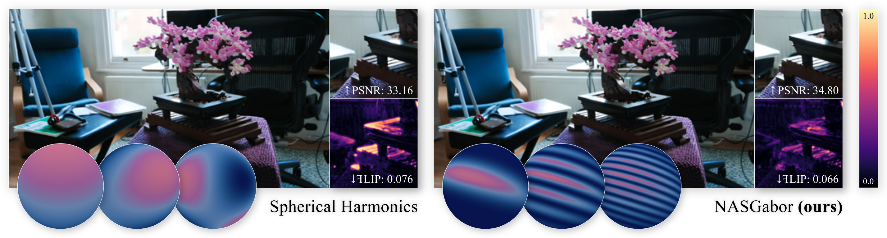
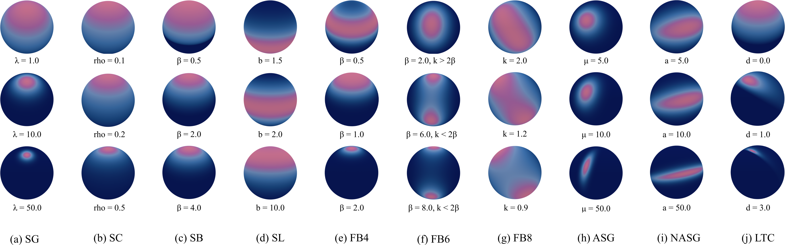
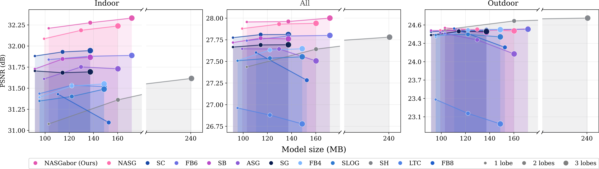
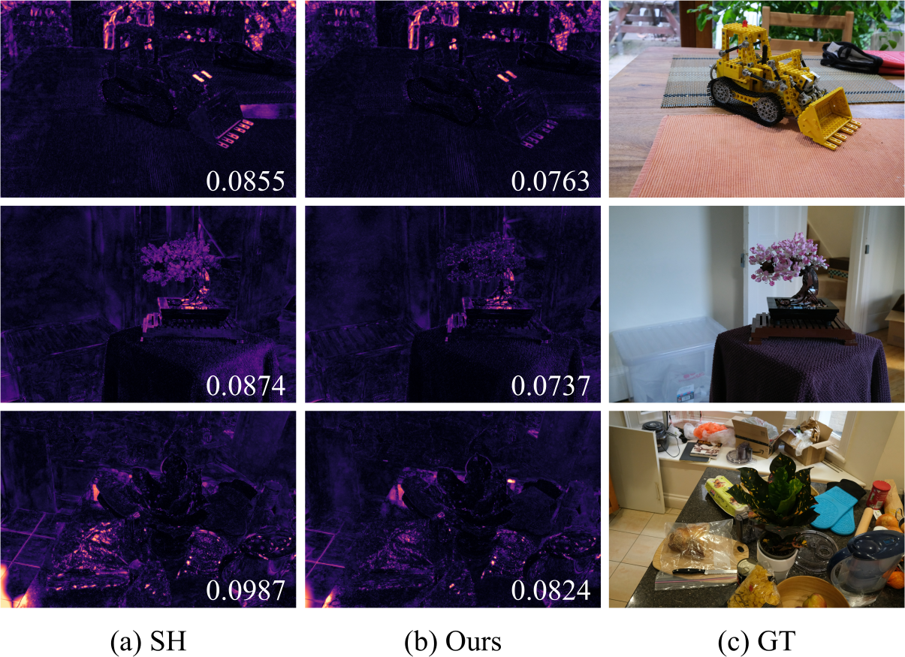
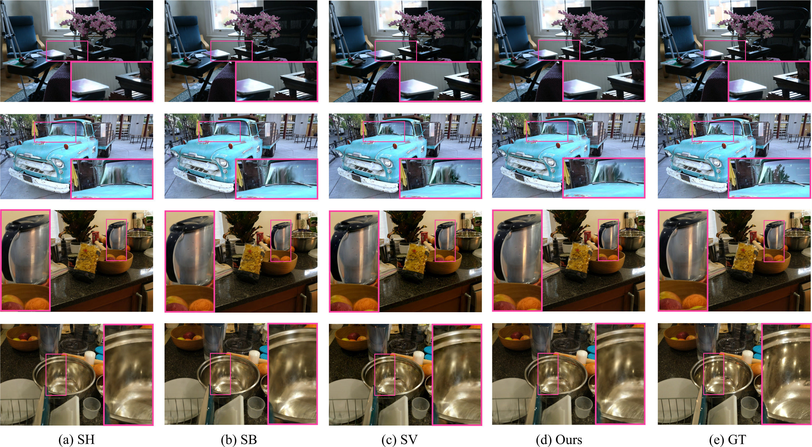
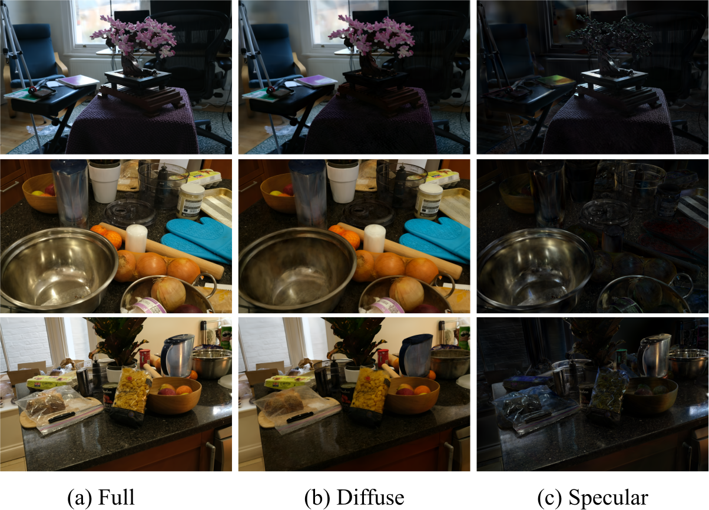
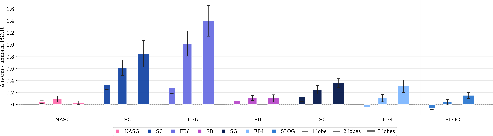

Beyond Spherical Harmonics: Rethinking Appearance Models for Radiance Reconstruction

View-dependent appearance modeling remains a challenging problem in novel-view synthesis and reconstruction. Accurately representing complex angular effects often requires substantial memory and computational resources. For learning-based methods, a common approach is to rely on low-order Spherical Harmonics (SH), which limits the ability to model complex view-dependent effects and tends to produce overly smooth or diffuse representations. To address these limitations, we systematically evaluate a wide range of spherical functions in the context of scene reconstruction — many of them introduced to graphics and computer vision for the first time in this paper. Guided by the resulting insights, we develop the Normalized Anisotropic Spherical Gabor (NASGabor) function: a compact, anisotropic, multi-modal kernel with a closed-form integral that achieves higher-quality reconstruction of view-dependent phenomena such as glints, while being up to five times more memory-efficient and more efficient to evaluate than commonly used SH expansions.
We benchmark a wide family of parametric spherical functions — from classical Spherical Harmonics, isotropic and anisotropic Spherical Gaussians, Normalized ASGs and Spherical Betas, all the way to less explored families coming from statistics, like the Fisher-Bingham families. All of them are plugged into the same radiance-field pipeline and evaluated under identical conditions.

From this analysis we distill three properties that govern effectiveness in radiance-field reconstruction: anisotropy (anisotropic kernels consistently outperform isotropic ones), coupled multi-modality (jointly parameterized lobes are easier to optimize than independent ones), and closed-form integration (learning normalized kernels improves the results, but integrals must be practical to compute during training). A single spherical lobe combined with diffuse color can match or surpass third-degree SH while using roughly five times fewer appearance parameters.
The chart below summarizes reconstruction quality (PSNR) versus per-primitive memory for the spherical functions in our study on Mip-NeRF360, grouped by indoor and outdoor scene type and varying lobe count. Motivated by this experiment, we developed a new kernel: a normalized anisotropic spherical Gabor function or NASGabor, which outperforms all other kernels in the task.

NASGabor is a normalized anisotropic spherical Gaussian (NASG) envelope multiplied by a positive cosine carrier
that introduces a controllable number of ripples. We derive analytic gradients for NASGabor and un-modulated
NASG, and implement the appearance model as forward/backward CUDA kernels inside
gsplat.
fNASGabor(v) = e2λ(K1 − 1) K0 1 + cos(k x⊤v) 2
Orange: NASG (Gaussian) envelope Blue: shifted cosine carrier (harmonic)
We compare NASGabor against recent appearance models for primitive-based radiance fields, all
implemented in gsplat and evaluated on Mip-NeRF360, Deep Blending, and Tanks & Temples
under identical training budgets (learning rates are set per method: manually tuned baselines or our
camera-spacing heuristic for NASGabor). Overall, NASGabor matches or outperforms prior methods in
quality at a fraction of the memory cost, with faster training and rendering.
| Method | Params | Mip-NeRF360 | Deep Blending | Tanks & Temples | ||||||
|---|---|---|---|---|---|---|---|---|---|---|
| PSNR ↑ | SSIM ↑ | LPIPS ↓ | PSNR ↑ | SSIM ↑ | LPIPS ↓ | PSNR ↑ | SSIM ↑ | LPIPS ↓ | ||
| 2DGS + SH | 48 | 27.22 | 0.804 | 0.275 | 29.56 | 0.904 | 0.325 | 22.85 | 0.827 | 0.244 |
| 3DGS-MCMC + SH | 48 | 27.99 | 0.830 | 0.229 | 29.49 | 0.912 | 0.306 | 24.46 | 0.866 | 0.174 |
| 3DGUT-MCMC + SH | 48 | 27.82 | 0.826 | 0.233 | 29.87 | 0.913 | 0.309 | 24.20 | 0.861 | 0.180 |
| Beta Splatting + SH | 48 | 28.00 | 0.830 | 0.226 | 29.79 | 0.911 | 0.294 | 24.34 | 0.868 | 0.173 |
| Beta Splatting + SB | 15 | 28.09 | 0.830 | 0.227 | 29.24 | 0.908 | 0.301 | 24.64 | 0.870 | 0.173 |
| Spherical Voronoi (12 params) | 12 | 28.19 | 0.830 | 0.230 | 29.56 | 0.907 | 0.301 | 24.64 | 0.869 | 0.197 |
| Spherical Voronoi (48 params) | 48 | 28.46 | 0.832 | 0.226 | 29.90 | 0.912 | 0.301 | 24.67 | 0.870 | 0.172 |
| NASGabor — 1 lobe | 12 | 28.40 | 0.829 | 0.228 | 29.91 | 0.911 | 0.290 | 24.64 | 0.867 | 0.173 |
| NASGabor — 2 lobes | 21 | 28.46 | 0.830 | 0.227 | 30.24 | 0.915 | 0.287 | 24.68 | 0.869 | 0.173 |
| NASGabor — 4 lobes | 39 | 28.46 | 0.830 | 0.227 | 30.37 | 0.914 | 0.286 | 24.79 | 0.869 | 0.172 |
| Method | Params | Storage ↓ | Train time ↓ | FPS ↑ |
|---|---|---|---|---|
| Spherical Harmonics | 48 | 747.68 MB | 15m50s | 128 |
| Spherical Beta | 15 | 356.04 MB | 15m08s | 143 |
| Spherical Voronoi | 48 | 747.68 MB | 17m32s | 130 |
| NASGabor — 1 lobe | 12 | 320.44 MB | 13m38s | 146 |
| NASGabor — 2 lobes | 21 | 427.25 MB | 14m42s | 143 |
| NASGabor — 4 lobes | 39 | 640.87 MB | 16m36s | 136 |
Replacing SH with NASGabor inside an otherwise standard 3DGS-style pipeline yields measurably better view-dependent reconstructions. FLIP error maps below show that NASGabor more accurately depicts sheens, highlights, and other high-frequency effects than spherical harmonics.


An interesting byproduct of mixing diffuse color with spherical functions as an appearance model is its capacity to naturally disentangle diffuse albedo from other view-dependent effects related to material properties or lighting, with no extra losses, regularizers, or supervision. This basic intrinsic decomposition could be useful for simple relighting, material estimation, or reflection removal.

One the most interesting findings, and one that can be extended to other proposed appearance models for 3DGS (e.g. Spherical Beta kernels[Liu et al.'25]). Learning normalized kernels (individually) consistently improves quality across scenes. Kernels where integration is analytic or easy to compute becomes critical for maximizing the potential of the model. We derived closed-form integrals for Spherical Beta kernels and NASGabor, which we detail in the paper.

Ewa Miazga, Jorge Condor, and Piotr Didyk. Beyond Spherical Harmonics: Rethinking Appearance Models for Radiance Reconstruction, Computer Graphics Forum (Proc. EGSR 2026).
@article{Miazga2026BeyondSH,
author = {Miazga, Ewa and Condor, Jorge and Didyk, Piotr},
title = {{Beyond Spherical Harmonics: Rethinking Appearance Models for Radiance Reconstruction}},
journal = {Computer Graphics Forum},
note = {Proc. EGSR 2026},
year = {2026},
eprint = {2606.09794},
archivePrefix = {arXiv},
}